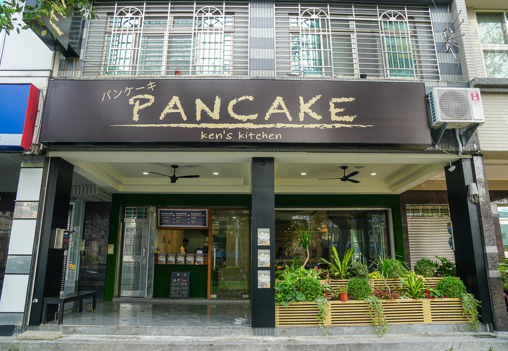
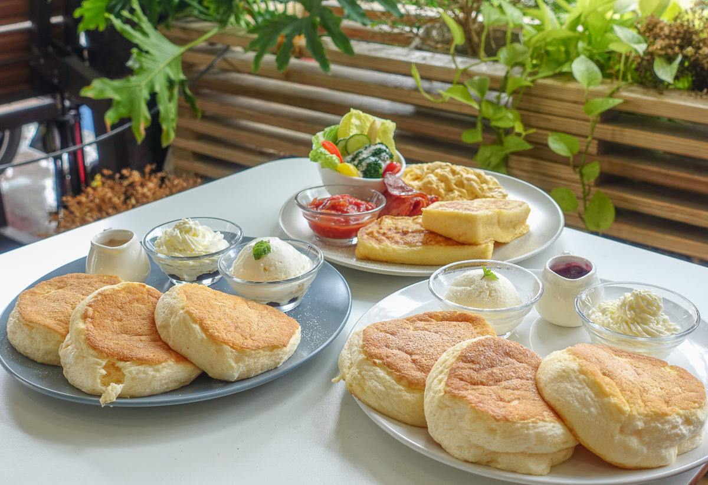

高雄下午茶推薦！四維三路上新開幕的舒芙蕾鬆餅店－Pancake Ken’s kitchen。
日籍老闆將日本最熱門的甜點舒芙蕾鬆餅帶來，嚴選日本食材與配方，也因此口感綿軟蓬鬆，
奶香十足且入口即化！舒芙蕾鬆餅之外，店內的限量法國吐司與限量日式熟成咖哩飯
也很受歡迎；2019年1月剛開，已有不少甜點控特地前往，鬆餅好口碑也讓它成了超夯的
三多商圈美食！情侶約會或是聚餐都非常適合喔～
 
泰泰我要
御澗章魚燒
THIS BALL
我的期末學習心得